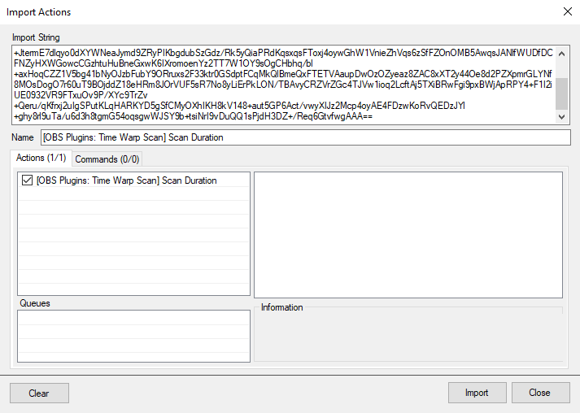

Action Imports
Image
TlM0RR+LCAAAAAAABADFVVFvmzAQfp+0/2AhVdqkegJDIFTTpG5Vt750UxNtD00fDjioNWIy2zSNqvz32ZAUQtpJqSaVhwTuu+/z8d1hP7x9Q4hzh1LxSjgnhB03AQFzNE/O9ffPE/KjrAsu1AmZ8jmSXyAXZJKCuCEXcyjQaRmQaqOgDOnaPhPy0P4ZiGdWyvUCjDxg1PPijAZxDHQMLKQxC4PQj8Mk8UatVkP6U2NtSxB1WXZRFJCUaPW0rLEXv0/LOsNzWc2/caUruTIpOZSql3PwOzWsQlb1wtIo/Uj+wSTvkhXhv70gjt6TT5T2JKBcwkpd1WK/Jgkiq+anjXf7aFqJtJYShd7HtORFYdpmDb/prTVsw04rdnzoKmzCC4k5v7dAlagrWA5gaSIGe5jJmSBk5kg0HVJ6ulrgzAAzZ4J6UtUyxXNeapTmUXNRqJlzPKCcgQZL2UhZRDXES1NYq3XUBY4eBWxi3mj3ErvAU4ldEb3lLMxtlzcSzb1hb/F1e9P8rYcuoKpLrabVqSzUcAq3PRPYNOGiHfvNRZ/42V6DRdrvJQLmZ56LJtOPaRClHoU8jinGzAuYHyfoD4lL5MWtnRX3g7uLaNMmEw/C3fDjcA+EnvnM2upEhnZM/C66Pn5u1u5Acit1uZm5rq+DFe+gbD535yfPsCJfYKFrieQM73g6zIVaV9P2hZ4orzEv9xLfz8Gl4zRiZrNxIwqQ5DRgYzdnCeR56B9qnsf8/+ee+xL3umF/zr3dPelw31zMPD9KU5pkkJqhGyV0nGe+mUGWxSMPfHCDV/XNe4lvfHdP37VsAfqWgCLqtloKwgUx29/hxqVRnoyixJxuIYIZs2BMkzRBGjIWsJhloyAIX9U41jNue7t3bny1CwyPlLQqS1gozHpoCzZCbWZ7Xveohjafm9Ntm7/+CwRIHnlqCAAA
Line Color
TlM0RR+LCAAAAAAABADFVV1r2zAUfR/sPwhDYYOqyLYc22UMupZug9GNJmwPTRmyfOWaOXIm22lDyX+fJCe146RjLYX5wbbux9HVOVfS/etXCDkLUFVeSucYeYfWINkM9Mi5+vphjL4VTZbL6hhN8hmgH0zN0ZgzeY2+5BLQaVmUymnTGK81TKUzr8wYofv2o115avCECxEXjOLQi3xMI+A4GgmGg5CLBDwgNPFbLJv0u4HG1CGbouisIFlSgMGrVQM9+x0vmhTOVTn7lFd1qZY6RLCi6sU8b2E2NVNlMze5GL9Df0lHb5Ilyn+5NA7fovcY9yBYccuW1WUjdwtTTKbl7MQSuOvlpeSNUiDrXV+t8izTAhrWr3tzDbXY0mOLjK5Ca54rEPmdcZRJdcluB26lLdp3P1VTidDUUaBlqurJcg5T7Zg6Y6jHZaM4nOdFDUoP61xm1dQ5HKScsZqZlDWU8VQ28UIX1mIddIaDBwATKCx2L7Az7AvsiuhNZ9yFlvonN1KvcYzBSn+kV6+hNsGr9sd+VkNKoGqKupqUJyqrhn25EVCCVeSz3Qhk/eA9r80zmKTdQRHxweVRjEXIQ0wD7uI4SFzMPS/1Rh64LosHibeQZzemccgR2fbUWjNtp6Nt80OnD4Ae2XhtdTIF0zN+Z10dPtZ4C6ZyA3WxbsBO5MGMC1bYA8D5nqdQolM2rxsF6AwWOR/GsqYuJ+2C9pRnyWMcRMxpjCGKNXmjkOMkJQKPSByzOKUh9elTyXM9/+XYI89hr+v8x9jbPqCezhuPhKAQABajhGMaQ4STwPWwCJhg4KWcRcl/5c39F95YMb9h5o4LguH2NehRMKwHQO4LT1pWd2HsEb5zQO/V7OGU2bvJ/XTkEx6kmHiUYAqE4cgNCYYg0QIElLA4ejLfhEQvR7jXI3zzu3P5fDQTDO8lfdYWbF5B2vO2TgvURrY3fy9Vp81mmt9N/OoPjHJwgLkIAAA=
Line Opacity
TlM0RR+LCAAAAAAABADFVW1r2zAQ/j7YfxCGwQbVsB2/qYxBt9JtMNrRhO1DU4YsnT0xR/ZkOW0o+e+T7KR2nGbQMqg/+OWeu0fn5+6ku5cvEHKWoGpRSucY+UetQdIFmC/n6uLDFH0rmlzI+hjNxALQD6oqNGVUXqOvQgK6qCgTeuV0gZRpQ1Sb2Cv7jdBd9zCQ4JYRSEj8CScYYhLgIEwSTCjJcBj4CU+zJPDDpONqg/400NhMZFMUvRUkTQuwfFo1MLDfsqLhcKbKxWdR61KtjEtGi3rg89Rfa4NzVTaVjcb4HfoHAXqdrpD47QUkfoPeYzygoMUNXdWXjdxPTVHJy8VJK+E+ykrJGqVA6n1MK5HnpohW9+vBWuNq7FRkR44+w9ZcKcjErQXKtL6kNyNYGYvB7uZqLhGaOwpMoWo9W1UwN8DcmYKelo1icCYKDcp8aiHzeu4cjUJOqaY2ZENlkboNPDeJdVyvesOrewLrmLXcA8fe8JBjn8RgOQsXptg/y67YGyZr2pTfUG2d191L+1iPJYG6KXQ9K09UXo87c1tACW1FvrSj4G4u/MBte40W6WaIu0GcBSnF4AUTM0PEx9TnPk6IFxGeeBGwcBR4AyL/ZRvHfevuItrUzNiDaNd83+kjogOj12UnOdiemfTW9dGhxltSJSzV+aYB+yKPVlzSot0CnO+CQ4k+0ko3CtApLAUb+9JGl7Puhx5IrxWP+CyKoyjBlIPZgOKIYKNYguMw5Zy4aZx42WPF8/zJ/1PPfYp6fecfUm93g3q8bjHlKSN+jH2SEhx4LMEpCwlmzGU0hIByxp5VN+8pug3m/IBwnus+WisW+QlNaYjBBTOgE8/DKZ2EOCTMTeIgoukkflat/IFW29e9c+OTXWB8pLCyKGhVAx+gHdgSdZ7dsT0INWGLhTndtv7rvxvSViR4CAAA
Line Width
TlM0RR+LCAAAAAAABADFVW1r2zAQ/j7YfxCGwgbVsPwS22UMupVug9GNJmwfmjH0ck7FHDmT5aSh5L9PspPacdpBy6D+YEt39zw6P3eSbl++QMhbgq5kqbwTFBw3BkXnYGfe1df3Y/StqGdSVSdoIueAflC9QGNO1U/0RSo7l8Jcey2McmNpKou8cnOEbtuPdUnh+AinQSbICMcky3EURgzTHAj2IQyiwCdiJFjL1YD+1FC7PFRdFJ0VFGUFOD6ja+jZb3hRCzjX5fyTrEyp1zYkp0XVi3najzXQmS7rhcNi/Bb9A45esTWSv0mUJa/RO4x7FLRY0XV1WavDxDRVopyfNgIeenmpeK01KHPoM1rOZraATvWfvbWGtdirx54YXYaNeaEhlzfOUbLqkq4Gbm0t1nc71VOF0NTTYMtUmcl6AVPrmHpjMOOy1hzOZWFA26mRalZNveMB5Iwa6iBbKuepGuCFTazlOuoMR3cELjBvuHuBneG+wC6J3nLOXdhS/1q5Um95nKEpvaXZBW7aQfPZDOWAqi5MNSlP9awa9uSueAqaanxuNoG/ffA9r90zWKTdPYmf0CzJAhyOYsARxBlmCYtxLgQJBM2yJMkGwBXI2bVrGv+Nv+8xtl7WHo32zXddPiB6YNO12SkBrl/Czro5fqjpllRLR3Wxbb6uwIMVl7RoNr/3XQoo0Qe6MLUGdAZLyYextDblpP2he9JrxIuDOM5YBDjMU4ajKM1xGjGGRZgSFnF7FIn0seKRIPx/6vlPUa/r+ofU2z+cHq9bwBgh3HZZmLLE6sbtkU3jHHOWCsYTlo9I/qy6kafodrfLH5AtfLROaZqG4IeA44RRHKWBwIymKU4JBBDlASfB6Fl1Cno67YYH98VHt8DwKuFlUdBFBaLnbZ0NURvZXtY9qIXN5/ZW28Vv/gLOR7l2bAgAAA==
Rotation
TlM0RR+LCAAAAAAABADFVd9r2zAQfh/sfxCGwgbVsOVfcRmDbqXbXrrRhO2h6cNZPntmjpzJctpQ8r9PkpPacdpBy9j8YFt39306fXeS7l6+IMRZoWzKWjgnhB1bg4AF6pFz9eX9lHyt2qIUzQmZlQsk30EuyZSDuCaXtQJlcB0IuBk0GndlxoTcdR/tKjPDxnyIcxZxGmUANOCuRyFOEpqmYYiTLMCYQcdlQb9abE0Woq2q3ooC0goNn5ItDuy3vGozPJf14lPZqFqudUgOVTOIec6yLLCQdbs0SErfkj+Ayat0TcqfXpDEr8k7SgcUUN3AurlsxWFaEkRWL06tfIdeXgveSolCHfqULItCF89ofj2Ya1yJvWrsSdFnaM1LiXl5axx12lzCzcgttUX77uZyLgiZOxJ1kRo1Wy9xrh1zZ4pqWreS43lZKZR6qEpRNHPneAQ5AwUGsqUynsYCL3RiHddRbzi6JzCBueUeBPaGhwL7JAbT2VS2hd6y7IaaYxe16X7sZzPWApu2Us2sPpVFM27HXeUE2lJ8tv3vbh/6wGv3jCbpNo6r9wp6nNHYc/XGidiEJswDDcwY5yxJ0I9GwBssix+mY9w37r5H6WJpexDtm+9bfET0yH7rshMZmmbxe+vm+LGOW4EsDdXFtvP66o5mXEFl973zrcywJh9gqVqJ5AxXJR/HQqvqWbegB9Kz4iUehhAmPvWZy7V4Xk4T1IcQRzeFJAwzX6/uieJ5zP976rnPUa9v+cfU2z+Znq5bBBFyP+Q09VHrlkcZTXIfaI7AwySEIEnHc/9b3bzn6CYPDvc91dyny5RPeIQx0JgjowGwkE4Sf0JZEER+5geZy/6vTGwg0+734K74aCYYXyO8ripYNpgNvJ3TEnWR3TU9gGrYYqFvtF385jfRf0GfZAgAAA==
Rotation
TlM0RR+LCAAAAAAABADFVd9r2zAQfh/sfxCGwgbVkGz5VxmDbqXbXtrRhO2hKeMkXzIzx85kO20o+d8n2UntOM2gZVA/2Nbdfd+dvztZ969fEeIsUZdpkTsnxD1uDDnM0ayc68uPI/Itq2dpXp6QcTpH8gP0gowU5DfNnZzVGioLbpGg7KI04Gu7JuS+fRhXmlhKFigJQRhS9HyfCpQuBaFCOvUZixWClFy2XA3oT421LSWvs6yzYg4yQ8tX6Rp79juV1Qme62L+JS2rQq9MyBSyshfz7G9r0DNd1AsLp/Q9+QcDeSNXJP3NRRy+JR8o7VFAdgur8qrO92vTkCfF/LTRcN+rilzVWmNe7fsqnc5mpo1W+JtermE7dlqyo0dXYWNeaJymd9ZRyPIKbgdubSzGdz/Rk5yQiaPRdKqsxqsFToxj4oywGhW1VnieZhVqs6zSfFZOnOMB5AwqsJANlfWUDfDCFNZyHXWGowcCGzhtuHuBneGxwK6IXromoenYz2TT7W1OY9sOgCHbhq/bl+axHoqCZZ1V5bg41bNyOJzbFubY9ORruxs2F33ktr0GSdptFCqMkQlBmeQxFTETVAaupDwOzOZyeaz8ZAC8xXT2y44Oe8d2PZXpmrGLYNf8MOsDogO7r60uT9BOjddZ18eHRm8JOrVUF5sR7No8yLiErPkLON/TBAvyCRZVrZGc4TJVw1ioq2LcftAj5TXiBRwFgi9pxBWjApRPY4+F1I2iUE0932VR9FTxuOv9P/XYc9TrZv+Qeru/qKfrxj2uIgSPutKLqHARKYD5gSfCMyOXhIKH8kV148+aut5GP6Act/vwyXIJz2Mcp4oyAE4FDzwKoRvQEDzJYl+ghy8rl9uTa/u6d3h8tgmG54oqsgwWJSY9b+tsiNrI9vDuQQ1sPjdH3DZ+/Req6GtvfwgAAA==
Transparent
TlM0RR+LCAAAAAAABADFVU1r20AQvRf6HxZBoIVskWRZH6EU0oa0vSQlNu0hzmF2NVJFZUndXTkxwf+9u5IdfdgpTShEB0k7M+/N6M1o9/71K0KsFQqZlYV1QtzjxlDAEvXKur78OCPf8jrNCnlC5tkSyQ8QFZlxKG7IXEAhKxBYKKvFAVeaR2rotVkTct8+tCuLDaHNE45RkNBp6Eyoh+DRyOecuhhOAJhr+8mk5WpAv2usTSFFneedFQtgORo+JWrs2e94Xsd4Lsrll0yqUqx1SAK57MU888sabCrKujJgSt+Tv+DJG7Ym2S/Hi4K35AOlPQrIb2Etr+pivzKdMi6Xp42C+15eFrwWTUF7PiWyNNUtNLLf9HKNmzFoyECNrsLGXAlMsjvjKJm8gtuRW2iL9t0vxKIgZGEJ1H2Sar6ucKEdC2uGalbWguN5lisUeqmyIpUL63gEOQMFBrKlMh7ZAC90YS3XUWc4eiAwgUnD3QvsDIcCuyJ66Yxbdb3eEvUsmmkXu2lfmsdmrAjKOldyXp6KVI7ncte/ApuGfG1/hO1FD9x21yhJ+we5EcRTHxh1g8Cmnhf6lIUhpw7HBF2GzI78EfAWs/SnmRv7nT30KN0ybff8oflh0EdEj/x4bXVFjGZkJp11c/zY3K1AZIbqYjt/XY9HGVeQNxuA9T2LsSSfoFK1QHKGq4yPY6FW5bz9oAPlNeJFrmfHDG0aBTFQb8KRhjzSSz/krhMgTOPgqeI57uT/qWc/R71u8B9Tb7g/PV23aeSwwPY8OgmDmHqR41KGTkB9BqHvTJkTgvOiujnP0U0d2uUHwg032n9VK/bCMIr4VJ9qzNeHHI8pRJ5LIYnsgHkcwQlfVC23p9bude/g+GwSjM8UXuY5VBLjnrd1NkRtZHts96Aatlzq420Xv/kDzZQwGncIAAA=
Use Opacity from scan for scan line
TlM0RR+LCAAAAAAABAC9Vd9r2zAQfh/sfxCGwgbVsB0rtssYdCvd9tKWJtsemlJk+ZSJOXImyWlDyf8+yU5qx2nGWsr84B/33X13/u4k3b9+hZC3AKVFKb0jFB7WBklnYL+8q/OPI3RRVFMh9REaixmgH1TN0YhReY2+aUDnc8qEWSKuyhnS1ox4qZqXQkjwGj7KjOXXlvLKfSN03zwsJHKXyA/ChNAhw8AyjiOaUZzlQHBAeMSGQZyATxquOuh3BZUrUFZF0VpB0qwAx2dUBR37HSuqHE5tiV+ENqVaWhdOC93xeeE/rjmnqqzmjhTj9+gvvOhNtkTiVxCl8Vv0AeMOBS1u6VJfVnK3YkVlXs6Oa2V3UVZKVikF0uxiRonp1LbcteO6k6vfpK1GbanUVlib5wq4uHNAmelLetuDlbVY7H6iJhKhiafA9k+b8XIOEwtMvBGYUVkpBqeiMKDspxFyqifeYS/khBrqQtZUDtF14JktrOE6aA0HDwTOkdfcHcfW8JhjW0QnnYNzbW5co2/KZhDWbM60Hg1LtwlYNS/1Y9WXBXRVGD0uj9VU94d200QJdVe+NqtkfeFHbpurl6RZXoQMGMlYgoNkkOII/BRnQZLihDE/4n4UkiTpBd6CmP50w+O/87cRY/tm7dFw2/ww7T2iPauyqU7m4OZm0FpXh/uGb0GVcFRn6yFsG93LuKBFvTt430UOJfpE56ZSgE5gIVjfl1amHDc/9Eh5tXhhEOcQUR8TCjGOUp/gbEgGmPGMpilJo4iETxUvCAcvp57/HPXa6d+n3vYm9XTdIB1ye0WYJKHVLU85pjEHnPsEfB7EhAX93P9Xt+A5unXW+R7htnfbf1UriXOrUJJhP6DEnoBphGnCUxxmlA95yuycPXmJvqhaYUetzevO6fHZJegfLKwsCjrXkHfQBqyJGs/mTO+E2rDZzJ5xG//VH4r5hnysCAAA
Installation
In Streamer.bot select Import in the top left.
Drag and Drop the Import File into the
Import String.

Configuration
Streamer.bot
1. Import the actions that you want to use.
2. configure the set arguments fields to fit with your OBS.
OBS Studio
1. Add a Time Warp Scan filter with the name you previously inserted in the filterName box.